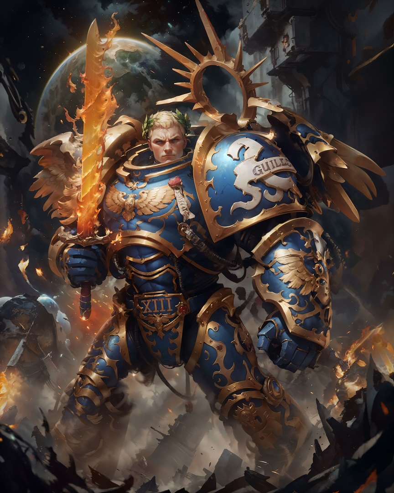

Grâce aux efforts largement diffusés de nombreux itérateurs impériaux, l’histoire du Primarque Roboute Guilliman, de sa jeunesse et de sa redécouverte par l’Imperium est largement connue et bien expliquée, en contraste frappant avec certains autres primarques. Une grande partie de ces récits ont bien sûr servi à servir d’édification pour les masses et d’exigences de la propagande impériale au cours des millénaires, mais entre les récits, diversement embellis, un certain nombre de faits et de thèmes cohérents émergent.
Selon la légende impériale, l’Empereur de l’Humanité a créé les vingt primarques à partir de gènes modifiés artificiellement en utilisant son propre génome dans le cadre du modèle original, imprégnant soigneusement chacun d’eux de pouvoirs uniques et surhumains grâce aux arts arcaniques de l’Immaterium. La doctrine impériale raconte ensuite comment les Puissances Ruineuses du Chaos ont emporté les primarques dans leurs capsules de gestation, les dispersant largement à travers la galaxie à travers le Warp.
Plus d’une des capsules a été percée alors qu’elle dérivait dans l’espace Warp - les forces de l’Immaterium se sont infiltrées, faisant des ravages sur le super-être en gestation qui se trouvait à l’intérieur de la capsule. Sans aucun doute, des dommages ont été causés et la corruption du Chaos a affecté plusieurs des primarques, bien que la nature de cette corruption ne devienne pas apparente avant l’Hérésie d’Horus.
Après avoir dérivé pendant des décennies solaires, ou dans certains cas même des centaines d’années terriennes, les vingt capsules de gestation se sont posées sur des mondes habités par les humains dans toute la galaxie de la Voie lactée - des planètes lointaines habitées par une variété de cultures humaines, et que ce soit par un destin inconstant ou un dessein cruel, chaque monde a fourni un creuset qui a tempéré l’enfant surhumain en le primarque qu’ils deviendraient. Que ce soit ce héros ou ce monstre, ce tyran ou ce libérateur.
La capsule contenant la forme en développement d’un primarque est tombée sur le monde de Macragge dans la frange orientale de la galaxie. Macragge était un monde sombre mais pas inhospitalier, faisant partie d’un empire stellaire délabré des âges passés que l’humanité avait habité pendant de nombreux siècles depuis l’époque de l’âge sombre de la technologie. Ses industries avaient survécu à l’ère des conflits en grande partie intactes, et ses habitants avaient conservé une société autoritaire mais cohésive.
Macragge avait remarquablement préservé un certain nombre de vaisseaux du Néant archaïques, à courte portée, capables de se Warp, qui pouvaient être utilisés pour un transit quasi stellaire - si les conditions le permettaient - et son peuple a continué à construire des vaisseaux du Néant sub-légers même à l’époque des tempêtes Warp les plus intenses qui interféraient avec les voyages et les communications supraluminiques pendant l’Ère des Conflits. Cela avait permis aux habitants de Macragge de maintenir le contact avec plusieurs systèmes stellaires voisins colonisés par les Humains, malgré la fureur des tempêtes Warp, et ainsi de conserver un lien ténu avec le reste de l’espace humain et de savoir qu’il n’était pas seul dans l’obscurité.
C’est ainsi que lorsque la capsule tombée du primarque a été découverte par un groupe de magnats macraggiens qui étaient à la chasse dans une forêt locale, ils l’ont immédiatement reconnue comme un appareil de technologie avancée plutôt que comme une chose de superstition et de « magie ». Les magnats brisèrent le sceau de la capsule et découvrirent à l’intérieur un enfant humain d’une beauté saisissante et parfaitement formé, entouré d’un nimbe brillant de puissance dorée. L’enfant fut amené devant Konor Guilliman, l’un des deux nobles qui portaient le titre de « consul », et dont l’autorité gouvernait la région la plus civilisée et la plus puissante de Macragge, entourant la grande ville de Macragge Civitas. Konor adopta l’étrange enfant comme son propre fils d’une manière qui n’est pas inhabituelle dans sa culture, le nommant Roboute.
Le jeune primarque grandit anormalement rapidement et, ce faisant, ses pouvoirs physiques et mentaux uniques devinrent évidents pour tous. Il est rapporté qu’au moment de son dixième anniversaire, mesuré en années terriennes, Guilliman avait maîtrisé tout ce que les tuteurs les plus sages de Macragge pouvaient lui enseigner. Sa perspicacité naturelle en matière d’histoire, de philosophie et de science étonnait ses professeurs, tandis que sa mémoire était absolue et que son aptitude à extrapoler des conclusions précises à partir d’informations fragmentaires frisait l’inexplicable.
Son plus grand talent, cependant, résidait dans l’art de la guerre, qui était lui-même traité comme une science élevée et louée dans la culture de Macragge. Dès qu’il eut atteint sa majorité légale, le père adoptif de Roboute, Konor Guilliman, lui accorda immédiatement le commandement d’un corps expéditionnaire envoyé pour pacifier les terres de Macragge, à l’extrême nord du pays.
Nommée Illyrium, c’était une terre barbare de parias et de petits micro-États en guerre qui avaient longtemps abrité des brigands et des mercenaires qui attaquaient des terres plus civilisées aussi souvent qu’ils s’engageaient comme fantassins pour combattre les guerres de leurs voisins. Roboute mena une brillante campagne et gagna à la fois la soumission et le respect des féroces bandes de guerriers Illyrium, mais lorsqu’il retourna chez lui après la frontière nord, Roboute trouva la capitale de Macragge Civitas en pleine tourmente.
Pendant l’absence de Roboute, le coconsul de Konor Guilliman, un certain Gallan, avait déclenché un coup d’État contre Konor -- un développement loin d’être inconnu historiquement, même si dans ce cas il s’agit d’une surprise. Il s’avéra que Gallan avait depuis longtemps nourri des desseins pour régner sur Macragge Civitas et avait conspiré avec ceux de la riche noblesse de Macragge qui étaient jaloux du pouvoir politique et de la popularité de Konor, et aussi de plus en plus effrayés de l’avenir de son enfant adoptif prématurément précoce.
Ces mécontents représentaient l’ancien régime de Macragge, une aristocratie dont la richesse se manifestait par de vastes domaines soutenus par le labeur d’une multitude de serfs et de vassaux appauvris. Konor Guilliman, soutenu par les magnats de l’industrie de Macragge – rivaux de l’ancien régime – avait entrepris de contester cet équilibre des pouvoirs, forçant l’aristocratie de Macragge à fournir à ses vassaux un niveau de vie accru et des droits devant la loi, affaiblissant ainsi l’emprise de l’aristocratie sur la politique.
Konor avait également adopté une loi qui obligeait la noblesse de Macragge à lancer un programme ambitieux d’amélioration de l’infrastructure longtemps négligée de leur nation et d’agrandissement de la capitale à leurs propres frais. Ces réformes rendirent Konor Guilliman pratiquement inattaquable aux yeux du peuple, mais elles furent très impopulaires parmi tous les aristocrates les plus clairvoyants, à l’exception de quelques-uns des plus clairvoyants.
Alors que Roboute Guilliman et son armée triomphante approchaient de la ville de Macragge Civitas, ils virent la fumée d’une multitude de feux et rencontrèrent des citoyens fuyant la ville dans l’anarchie, et Roboute apprit que l’armée privée de Gallan avait attaqué le Sénat tandis que Konor et ses fidèles troupes de la garde d’honneur étaient à l’intérieur. Les réfugiés ont chacun raconté la même histoire. que des soldats rebelles avaient attaqué le Sénat de Macragge Civitas, tandis qu’une foule ivre, à l’instigation de Gallan mais maintenant hors de tout contrôle, parcourait la ville en incendiant, pillant et assassinant.
Roboute s’est précipité à la rescousse de son père adoptif. Laissant ses propres troupes faire face aux émeutiers ivres sans quartier, Roboute se fraya personnellement un chemin vers le centre de la ville, passant le travail sanglant des pelotons d’exécution rebelles partout dans le quartier du gouvernement, mais à la Maison du Sénat, il se trouva trop tard. Tout était une ruine criblée de balles et détruite, et même les rebelles, semblait-il, avaient fui les lieux pour se joindre au pillage. Là, dans les abris à moitié effondrés sous le bâtiment, il trouva son père adoptif mourant.
Pendant trois jours solaires, le consul blessé avait dirigé la défense du Sénat assiégé, alors même que les chirurgiens luttaient pour sa vie à la suite d’une tentative d’assassinat ratée sur le sol du Sénat qui avait déclenché l’attaque chaotique de la conspiration. On dit apocryphement qu’alors qu’il rendait son dernier souffle, Konor Guilliman a détaillé l’étendue de la trahison de Gallan envers son fils adoptif bien-aimé et a nommé ceux dont les mains étaient tachées de son sang.
La rage froide de Roboute Guilliman face à la mort perfide de son père adoptif était irrésistible. Avec le soutien total de son armée et des citoyens assiégés de Macragge Civitas, Roboute écrasa les rebelles aristocratiques, dispersant leurs armées de mercenaires et bordant les rues des corps pendus des émeutiers, rétablissant ainsi rapidement l’ordre dans la capitale du monde et les terres environnantes. Des milliers de citoyens affluèrent à la Maison du Sénat et, au milieu d’une vague d’acclamations populaires, Roboute assuma le rôle de consul unique et désormais tout-puissant de Macragge.
Le nouveau souverain brisa ce qui restait de l’ancien ordre aristocratique et les dépouilla de leurs terres et de leurs titres. Gallan et ses compagnons de conspiration furent arrêtés, les chefs exécutés publiquement et les autres condamnés aux travaux forcés pour reconstruire la ville qu’ils avaient ruinée, pierre par pierre, à la main. Ce n’était pas une sentence à laquelle ils survivraient longtemps. Dans le nouvel ordre, les soldats loyaux et les colons travailleurs se sont vu accorder des droits là où l’aristocratie oppressive avait autrefois exercé son emprise.
Avec une énergie surhumaine et la singularité de la vision que seul un primarque était capable d’exécuter, le nouveau consul réorganisa l’ordre social de Macragge, créant une méritocratie impitoyablement imposée où les travailleurs prospéraient et les honorables recevaient des postes de haute fonction, et ceux qui se dérobaient à la loi ou travaillaient contre le bien de tous faisaient face à des draconiens. mais une punition irréprochablement impartiale.
L’économie stagnante et inégale a été réorganisée, la technologie de pointe antérieure au début de l’ère des conflits a été diffusée plutôt que dispersée par l’élite, et les forces armées planétaires ont été transformées en une force puissante et bien équipée. Macragge prospéra comme jamais auparavant – un seul peuple et un seul ordre, unis sous le règne incontestable de Roboute Guilliman.
À peu près à l’époque où le jeune Roboute Guilliman faisait la guerre en Illyrie, la flotte des Principia Imperialis de la Grande Croisade de l’empereur avait atteint la planète Espandor vers 832.M30 à la limite extérieure du réseau de mondes avec lequel Macragge avait maintenu un contact interstellaire ténébreux. C’est des Espagnols que l’empereur apprit l’existence de Macragge et du fils extraordinaire du consul Konor Guilliman, et d’après ce qu’il apprit, il sut que cet enfant ne pouvait être autre qu’un primarque disparu.
Certains ont suggéré que l’arrivée de l’Empereur à Espandor et dans la région isolée de la frange orientale de la galaxie, si loin de la ligne de front de la principale poussée de progrès de la Grande Croisade, n’était pas un accident, et que, par certains artifices, il avait perçu ou avait eu une prescience de ce qu’il trouverait. Quoi qu’il en soit, ce qui a suivi n’était certainement pas prévu.
Alors que la flotte de l’Empereur se dirigeait rapidement vers Macragge, elle fut presque immédiatement déviée par de violentes bourrasques de distorsion qui s’étaient levées pour séparer Macragge et une poignée de systèmes stellaires voisins de l’approche de la flotte expéditionnaire. Contrecarré par une puissance que même l’Empereur ne pouvait ignorer facilement, il faudrait environ cinq ans avant que le contact puisse être tenté avec succès.
Dans les années qui suivirent, Macragge avait subi une transformation frappante. C’était maintenant un monde d’uniformité et d’ordre, prospère et productif. Ses villes avaient été reconstruites dans un marbre étincelant et un acier brillant, et les rangs serrés de ses armées étaient bien armés et bien équipés, et se préparaient maintenant à des opérations au-delà de leur propre monde.
Car même avant l’arrivée de l’empereur, Roboute Guilliman, dit-on, s’était beaucoup attardé sur les anciennes histoires contenues dans l’aristocratie déchue de son monde, et sur les fragments qu’il y avait trouvés racontant les anciens domaines interstellaires de l’humanité pendant l’ère de la technologie, et il avait commencé à rêver de nouveaux horizons et de nouveaux mondes à conquérir. d’un domaine « au-delà des mers de la nuit » ou, pour utiliser l’ancienne forme savante trouvée dans le texte, « Ultramar ».
Par sa volonté, il l’a fait ainsi et à l’intérieur de leur enclave scellée par le Warp, les vaisseaux de Macragge sillonnaient désormais des routes commerciales régulières et bien patrouillées avec les systèmes stellaires locaux, apportant des matières premières et des personnes au monde florissant, tandis que contre certains de ses voisins, de courts conflits victorieux avaient déjà été menés pour apaiser les conflits qu’ils y avaient trouvés.
On dit que lorsque l’Empereur vit enfin ce que son fils génétique perdu avait accompli en 837, il fut vraiment satisfait, et qu’il rencontra Roboute Guilliman sans la dissimulation qui avait été nécessaire avec ces primarques qu’il avait trouvés au timbre plus sauvage, tels que Leman Russ, Ferrus Manus, Mortarion et Vulkan. Il est en outre rapporté qu’une fois que Guilliman a appris la vérité sur ses origines, il a immédiatement juré fidélité à l’empereur, qu’il savait être son véritable père, car il avait déjà théorisé correctement le but pour lequel il n’était pas né mais avait été délibérément créé.
Il était immédiatement évident pour les observateurs impériaux que Roboute Guilliman possédait une puissante intelligence analytique, même si on la comparait aux capacités cognitives transhumaines de ses pairs primarques, ainsi qu’un talent pour l’art de gouverner et la macro-organisation au potentiel stupéfiant. Pourtant, peu de gens pouvaient alors deviner ce que de tels talents exploités dans la Grande Croisade allaient accomplir.
Si vous souhaitez revenir au hub de sélection afin de lire une autre histoire cliquez ici.